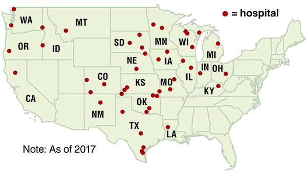

{% extends 'crains_template.html' %}


{% block content %}
<!DOCTYPE HTML>
{% include 'headers/meta.html' %}

<title>
    Graphics base
</title>

<!-- **************************** -->
<!-- *** importing libs **** **** -->
{% include 'headers/header_begin.html' %} <!-- MUST -->

<!-- *** these MUST be in this order **** **** -->
{% include 'headers/header_datatables.html' %} <!-- adding datatables -->

{% include 'headers/header_end.html' %} <!-- MUST -->

<style type="text/css">
.graphic { height:350px }
</style>

<br>
<div class="container">
    <div class="row">
      <div class="col-lg-12">

    {% if COPY.labels.headline %}<h2><strong>{{ COPY.labels.headline|smarty }}</strong></h2>{% endif %}
    

    <table id="gfx" class="table table-hover table-striped table-condensed display responsive" width="100%" >
      <thead>
        <th class="thLEFT" data-priority='1'>Hospital</th>
        <th data-priority='4'>City, state</th>
        <th data-priority='2'>Total profit<br>margin</th>
      </thead>
      <tbody>

        {% for row in COPY.list %}
        <tr>
            <td class="tdLEFT">{{ row.hospital }}</td>
            <td>{{ row.city }}</td>
            <td>{{ row.margin }}%</td>
        </tr>
        {% endfor %}
    </tbody>
  </table>
</p>

{% if COPY.labels.footnote %}
<div class="footnotes">
    <h4><small><strong>Notes</strong></small></h4>
    <p class="gfxcredit">{{ COPY.labels.footnote|smarty }}</p>
</div>
{% endif %}

<div class="footer">
    {% if COPY.labels.source %}<p class="gfxcredit"><i>Source: {{ COPY.labels.source|smarty }}</i></p>{% endif %}
    {% if COPY.labels.credit %}<p class="credit"><small>{{ COPY.labels.credit|smarty }}</small></p>{% endif %}
</div>


    <!-- **************************** -->
    <!-- *** Embedded gfx footer **** -->
            <br>
            {% include 'footers/footer_gfx.html' %}
            <!--</div>
          </div>
        </div>-->

{% endblock content %}


{% block js %}
    {{ JS.push('js/graphic.js') }}
    {{ JS.render('js/graphic-footer.js') }}
{% endblock js %}
